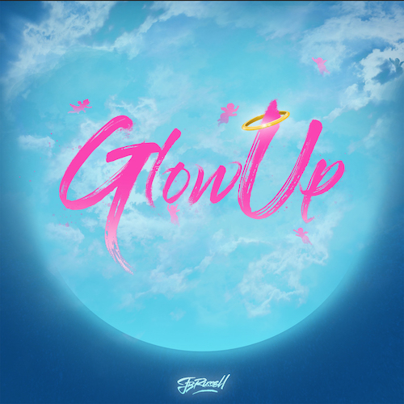
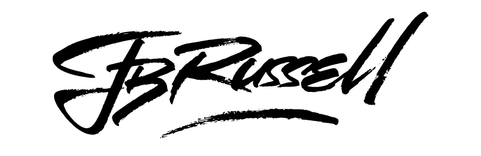

Entrepreneur
Artist
Musical Creative
Entrepreneur
Artist
Musical Creative
JB Russell creates his own unique blend of music by fusing the ruggedness of Hip-Hop, the soulfulness of R&B, and the energy of Pop elements together with an energetic and entrancing collection of emotions through his lyrics and performance. Frequently pulling in the elements of other genres to create the vibe he wishes to transpire through the speakers into the ears and souls of his listeners. JB's musical versatility and creativity stems from listening to music from various genres in his household making his list of inspirations numerous. Inspirations from his childhood such as Michael Jackson, Stevie Wonder, Prince, Zapp and Roger, George Clinton and the Parliament, and many more. His more recent influences being Childish Gambino, Pharrell Williams, N*E*R*D, Kanye West, Kid Cudi, Drake, Kendrick Lamar. It only makes sense that he grew to be an artist of endless capacity.